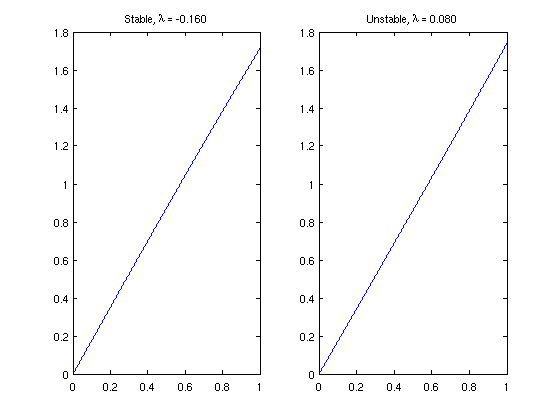
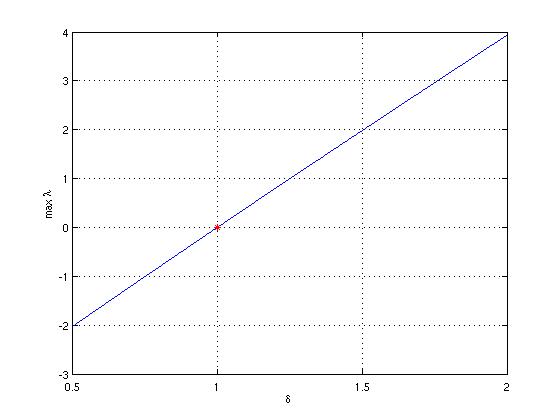

Stability of a thermoelastic rod
Toby Driscoll, 8th November 2011
(Chebfun example ode-eig/ThermoelasticRod.m)
Suppose a thermoelastic rod is fixed to a wall at one end and may expand to make contact with a wall at the other end. J. R. Barber [1] proposed a boundary condition that models a physically realistic transition between thermal insulation, when far from contact, and perfect thermal contact.
Linear stability analysis suggests a change from stable to unstable behavior as the temperature difference between the walls increases. The eigenvalue problem governing the stability of the perturbation phi(x) is nondimensionally
phi''(x) = lambda*phi(x), 0 < x < 1
/ 1
|
phi(0) = 0, phi'(1) + phi(1) = 4 delta | phi(x) dx
|
0/where delta is a function of the thermal gradient. The transition from stable to unstable happens at delta=1. The presence of the integral of phi in the boundary condition makes the problem unusual from a classical standpoint, but from the Chebfun point of view it's just another linear boundary condition.
LW = 'linewidth'; format long,
First, we solve the eigenvalue problem in a stable case.
N = chebop( @(u) diff(u,2), [0 1] ); % operator on 0<x<1 N.lbc = 0; % fixed end delta = 0.96; % stable choice N.bc = @(x,u) feval(diff(u),1) + u(1) - 4*delta*sum(u); % Barber condition [Vs,Ls] = eigs(N,4,0); % eigenmodes closest to zero
The eigenvalues are all negative, indicating stability:
diag(Ls)
ans = 1.0e+02 * -0.001601435706615 -0.251462532662429 -0.626486098335208 -1.234915472724216
Here is what happens in a slightly unstable case:
delta = 1.02; % unstable choice N.bc = @(x,u) feval(diff(u),1) + u(1) - 4*delta*sum(u); % Barber condition [Vu,Lu] = eigs(N,4,0); diag(Lu)
ans = 1.0e+02 * 0.000799646107482 -0.252000055361213 -0.625884455972660 -1.235278901225324
Here we see the perturbation which is least stable in the first case, or unstable in the second case.
subplot(1,2,1) plot(Vs(:,1),LW,1.6) title(sprintf('Stable, \\lambda = %.3f',Ls(1,1))) subplot(1,2,2) plot(Vu(:,1),LW,1.6) title(sprintf('Unstable, \\lambda = %.3f',Lu(1,1)))
The solutions above look linear, but they do have significant Chebyshev coefficients out to degree 8.
Without knowing the transition value delta=1 in advance, we could locate it through a simple Chebfun rootfinding search. First, we parameterize the boundary conditions and the maximum real eigenvalue.
BC = @(delta) @(x,u) [u(0), feval(diff(u),1) + u(1) - 4*delta*sum(u)]; maxlam = @(delta) eigs( chebop([0,1],@(u)diff(u,2),BC(delta)), 1, 0 );
Then, we construct a chebfun for the maximum lambda. A polynomial of degree 10 captures the behavior of the maximum eigenvalue to about 11 digits.
stability = chebfun(maxlam,[0.5,2],'eps',1e-11,'vectorize')
stability =
chebfun column (1 smooth piece)
interval length endpoint values
[ 0.5, 2] 11 -2 3.9
vertical scale = 3.9
Finally, the transition in stability occurs when the eigenvalue passes through zero.
dstar = find(stability==0) clf, plot(stability,LW,1.6), hold on, plot(dstar,0,'r*') xlabel('\delta'), ylabel('max \lambda'), grid on
dstar = 0.999999999997509
References:
[1] J. R. Barber, "Contact problems involving a cooled punch," J. Elast. 8 (1978), 409-423.
[2] J. A. Pelesko, "Nonlinear stability, thermoelastic contact, and the Barber condition", J. Appl. Mech. 68 (2001), 28-33.